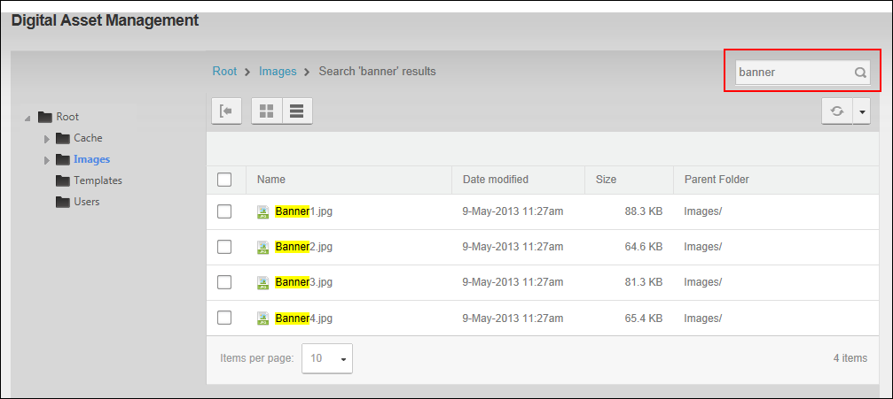

File Management - OR - Go to a Digital Asset Management Pro module.
File Management - OR - Go to a Digital Asset Management Pro module.How to search for files within the Digital Asset Management Pro module by either all or part of the file name or by entering a wild card search for a file extension, e.g. *.docx. Search results will include all files that match the entered criteria and are within the currently selected folder and any of its subfolders. All users can perform this task.
File Management - OR - Go to a Digital Asset Management Pro module.

Searching for Files